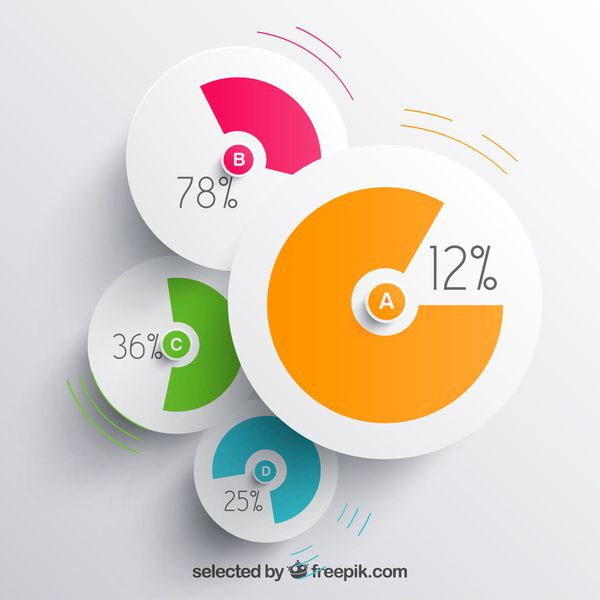
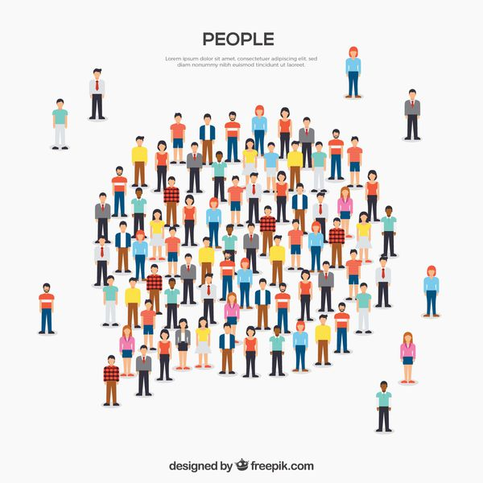

probability-and-statistics 3.4 Conditioning on Event Conditioning on Event 여기도 역시 Conditioning, 어떤 Event가 발생했을 때의 상황을 고려한 확률을 생각해볼 수 있다. 어떤 Event A가 발생한 조건에서 Continuous Random Variable $ X $의 PDF는 다음을 만족한다. $$ P(X\in B
probability-and-statistics 3.3 Normal Random Variables Normal Random Variable Normal Random Variable의 PDF 그래프는 고등학교 때 한번쯤 봤을 법한 정규분포곡선이다. $$ f_X(x) = \frac{1}{\sqrt{2\pi}\sigma}e^{-(x-\mu)^2/2\sigma^2} $$ $$ E[X]
probability-and-statistics 3.2 Cumulative Distribution Functions Cumulative Distribution Functions 연속적인 값에 대해, 우리는 $ P(X=x) $ 보다는 $ P(X \le x) $에 더 관심을 가지고 있다. PDF를 적분하면 그 값을 구할 수 있지만 $ f(x) = P(X \le x)
probability-and-statistics 3.1 Continuous Random Variables and PDFs Continuous Random Variables and PDFs 지금까지 우리는 이산적인 값에 대한 확률을 다루었다. 여기서는 연속적인 값에 대한 새로운 Random Variable과 Probability Density Function(PDF)를 소개하겠다. Continuous Random Variables Continuous Random Variable은 연속적인 값을
probability-and-statistics 2.7 Independence Independence Random Variable 간의 독립인 경우에 대해 다루며, 이 때 PMF, Expectation, Variance가 어떤 특성을 지니는지도 함께 살펴볼 것이다. Independence of Random Variables 두 랜덤 변수 $ X, Y $가 독립이려면 PMF가 다음을 만족해야
probability-and-statistics 2.6 Conditioning Conditioning 이 부분의 내용은 Random Variable에 조건부 확률 개념을 더하는 것이라고 생각하면 된다. 그에 따른 PMF, Expectation의 변화를 알아보자. Conditioning on Random Variable on an Event 어떤 Event $ A $가 발생했을 때, Random
probability-and-statistics 2.4 Expectation, Mean, and Variance & 2.5 Joint PMFs of Multiple Expectation, Mean, and Variance 여기서는 예전에 설명했던 Random Variable의 종류들에 대한 Expectation과 Variance가 어떻게 되는지만 간단하게 말해줄 것이다. 단, 증명은 단순히 전개하면 알 수 있으므로 생략한다. Expectations of Standard Random Variables Discrete Uniform
probability-and-statistics 2.3 Functions of Random Variables & 2.4 Expectation, Mean, and Variance Functions of Random Variables 여기서는 Random Variable이 값이 아닌 함수로 정의되는 경우에 대해 이야기한다. Random Variable $ X $와 $ f : \mathbb{R} \rightarrow \mathbb{R} $인 함수 $ f $가 있다고 하자. 그리고 새로운 Random
probability-and-statistics 2.1 Basic Concepts & 2.2 Probability Mass Function 2장의 전체적인 내용은 Discrete Random Variable에 관한 것이다. 이 포스팅에서는 Random Variable과 Probability Mass Function(PMF)이 무엇인지에 대해 설명한다. Basic Concepts Random Variable 정의를 그대로 읽어보자면, Random Variable이란 Sample Space를 실수에 매핑하는
probability-and-statistics 1.5 Independence Independence Probabilistic Independence 두 사건이 독립이라는 말은 한 사건이 발생하든 말든 다른 사건이 발생할 확률은 변하지 않는다는 것이다. 이를 수식으로 옮기면 다음과 같다. $ P(A\cap{B}) = P(A)P(B) $ 이 식은
probability-and-statistics 1.4 Total Probability Theorem and Bayes' Rule Total Probability Theorem and Bayes' Rule Total Probability Theorem $A_{1}, \cdots, A_{n}$이 $Ω$의 partition이면 Event B에 대해 다음 식이 성립한다. $ P(B) = P(B\vert{A_{1}})P(A_
 probability-and-statistics 1.3 Conditional Probability Conditional Probability Discrete Uniform Probability Law Ω가 유한하고 모든 outcome이 동일한 확률로 나온다면, $ P(A) = \frac{\left\vert A \right\vert}{\left\vert Ω \right\vert} $ (A의 요소 수 / 전체 outcome의 수) =>
probability-and-statistics 1.2 Probabilistic Models Probabilistic Models Experiments and Sample Spaces 정의 Experiment(시행) 가능한 여러 가지 outcome(결과) 중 한 가지를 만들어내는 과정 Sample Space(Ω) 가능한 모든 outcome의 집합 Events 정의 Ω의 부분 집합. 전체 혹은
 probability-and-statistics 1.1 Sets Sets Sets and Elements 정의 집합(Set)은 어떠한 대상(Object)들의 모임이다 집합에 속하는 대상 : 원소(Element) Example $ S_{1} = \{apple, orange, kiwi\} $ 집합 S는 apple, orange, kiwi 세 요소를 가지고 있다